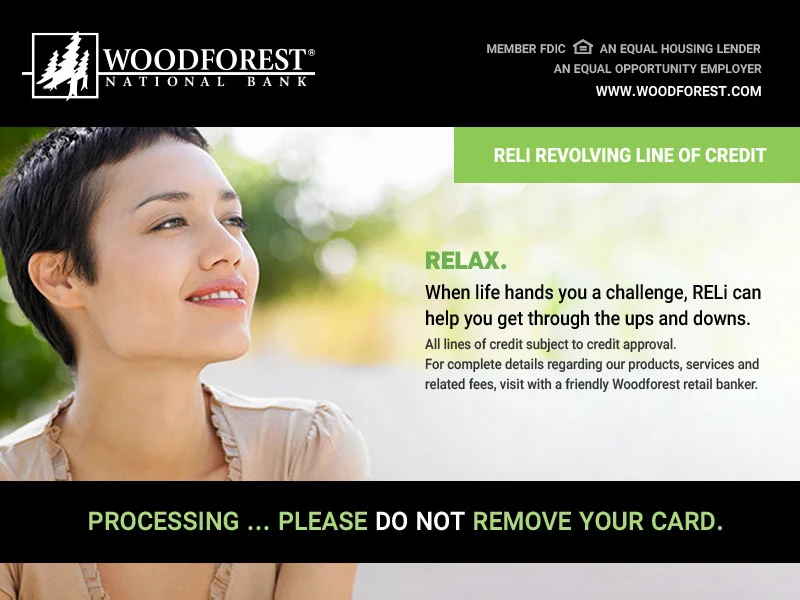
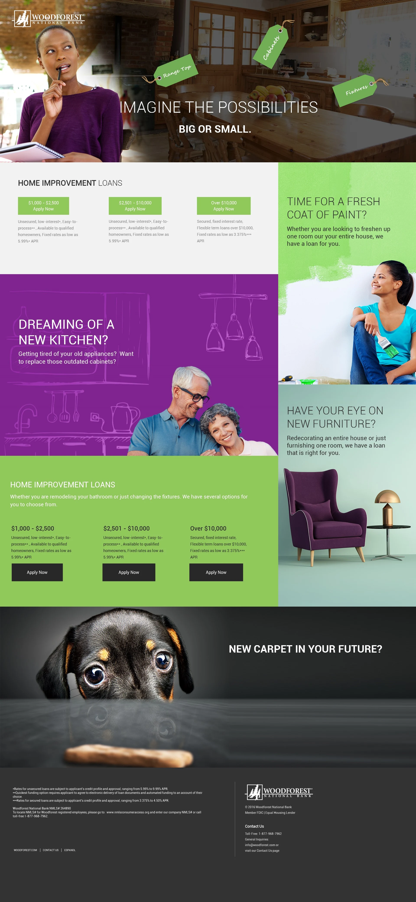
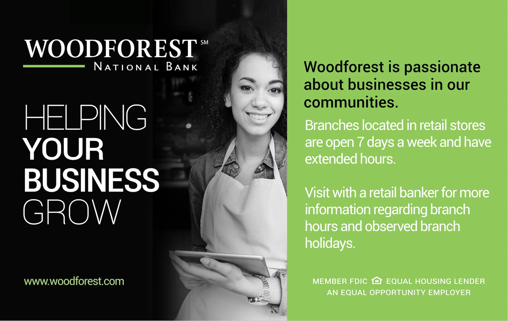
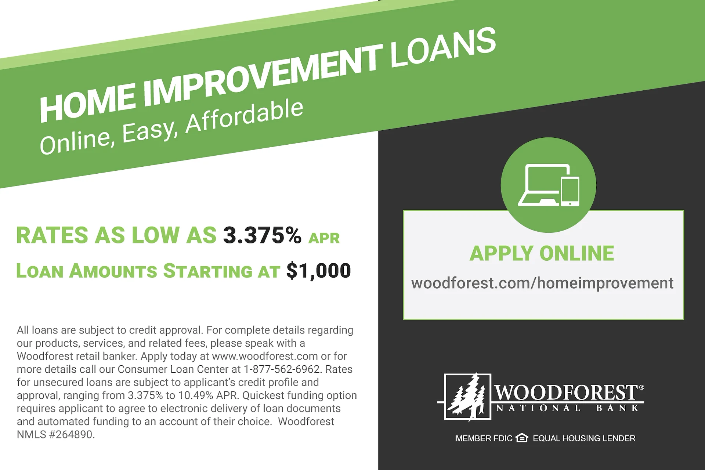
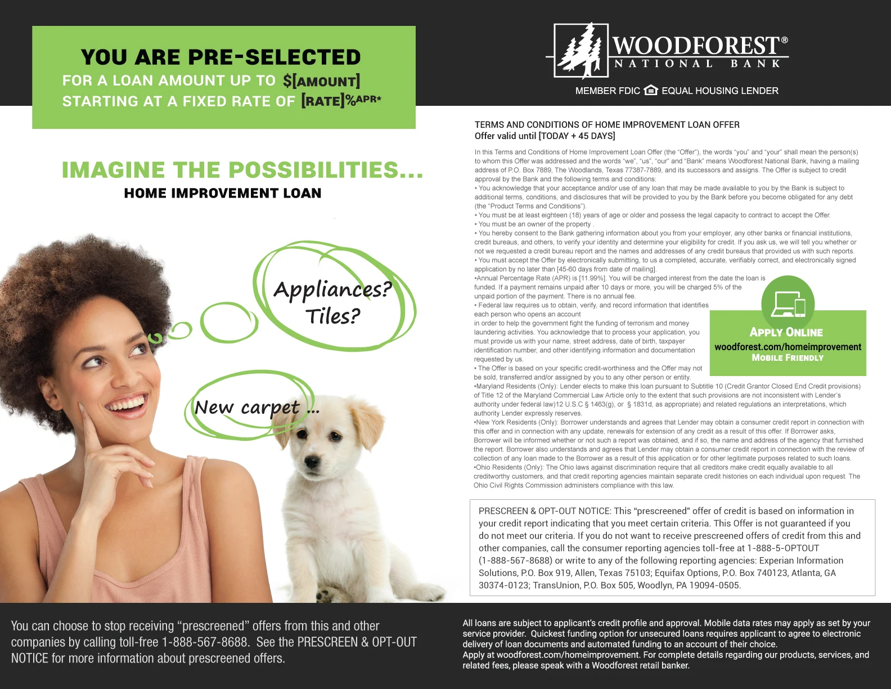
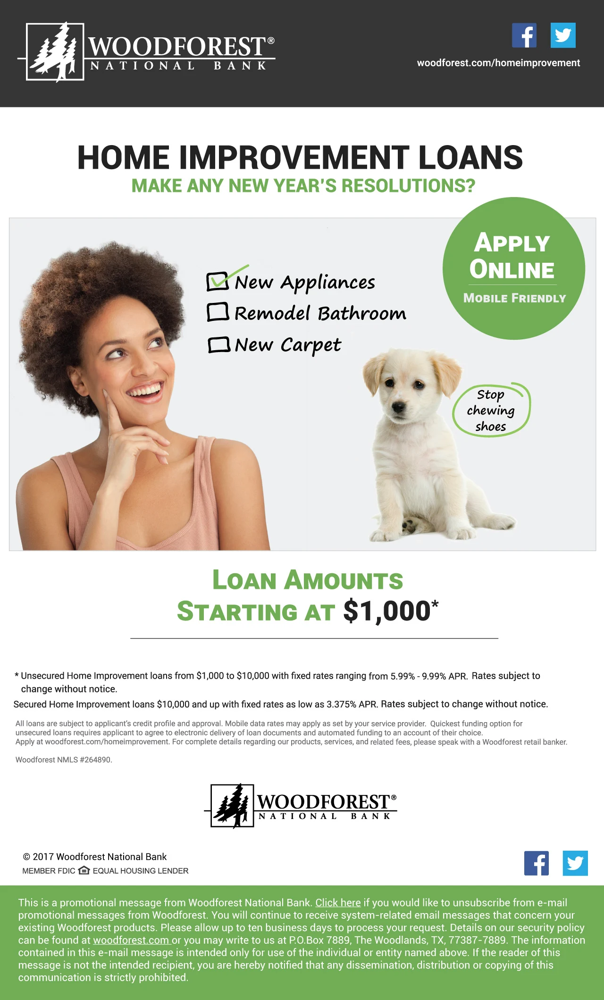
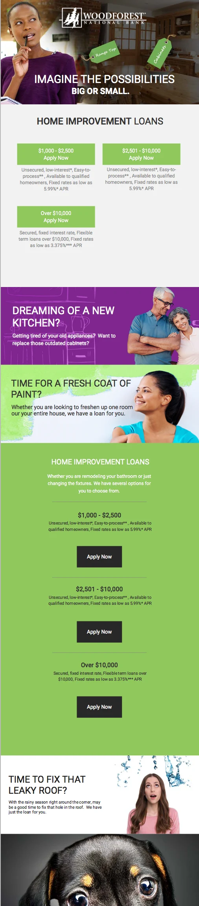
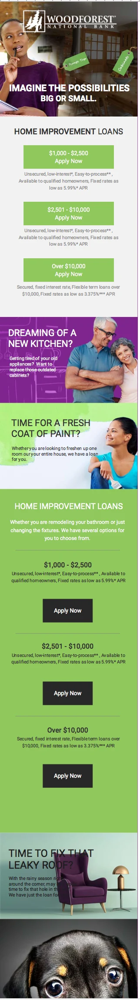
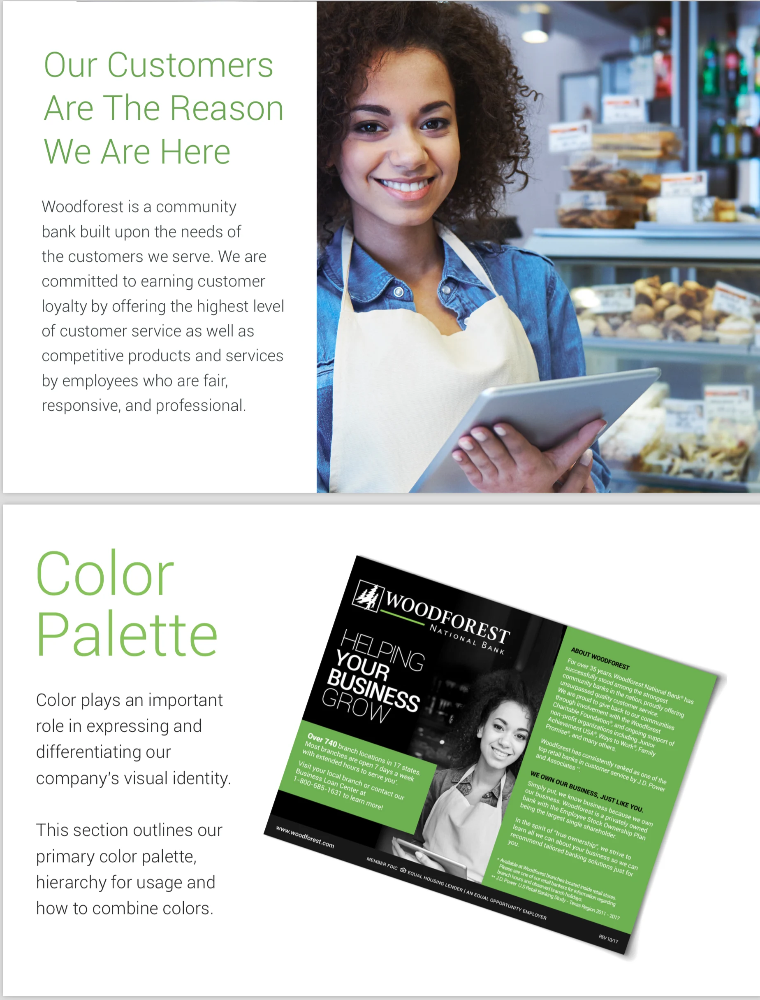

Portfolio & Case Studies
Research, strategy, and design in action. Selected work demonstrating research-driven approaches to complex AI and CX challenges.
Project Gallery
Selected projects and visual work samples
American Eagle Outfitter
UI and design work for retail experience transformation.


Branch Expansion & Branding
Branding and marketing for branch expansion initiatives.


Commercial Banking
UI and persona design for commercial banking solutions.


Community & Conversation Design
Wireframes and UI for large-scale community platforms.


Google Glass
Persona and UI design for wearable technology.


Haliburton
App and workflow design for industrial solutions.


Infiniti
Wireframes and persona design for automotive UI.


Mobile Banking App
UI and workflow design for mobile banking solutions.


Online Account Opening
Analytics and research for online account opening flows.


ReLi
UI and marketing design for ReLi platform.









UX Strategy
Strategy and workflow design for digital banking.


Research & User Insights
Deep understanding of user behavior informs strategy and design
Woodforest Banking: Customer Research
Qualitative research examining how customers navigate financial decisions under stress and uncertainty. These personas informed the design of clear, human-centered workflows that balanced transparency with simplicity.
Methods: In-depth interviews, behavioral observation, mental model mapping

Woodforest Banking: Workflow Design
User research translated into interaction patterns that enabled high-trust financial experiences. Personas guided decisions about automation, transparency, and human oversight across digital banking channels.
Outcome: Increased user confidence and task completion rates

Experience Design
Translating research and strategy into intuitive, scalable experiences
Conversational AI at Scale
Designing AI-driven support experiences where automation and human oversight work in tandem. Focus on moments where AI adds value vs. where human judgment is essential.
- Chat and voice interaction design
- Escalation and recovery flows
- Trust-building through transparency
- Rapid iteration with applied science teams
Amazon (Current)
Developer Experience Design
AI-assisted experiences for developers navigating complex cloud systems. Reduced cognitive load through clear error messaging, contextual guidance, and intelligent recommendations.
- Complex workflow simplification
- Error state redesign
- AI-guided next-best-actions
- High-volume A/B experimentation
AWS
Financial Experience Design
High-trust digital experiences for customers making complex financial decisions. Balanced automation with transparency and human judgment throughout the customer journey.
- Regulatory compliance translation
- Multi-channel consistency
- Design systems at scale
- Cross-functional stakeholder alignment
Woodforest National Bank
Community & Conversation Platforms
Large-scale conversational and community platforms supporting millions of asynchronous interactions. Designed systems enabling moderation, escalation, and meaningful participation.
- Moderation frameworks
- Participation patterns
- Escalation workflows
- Enterprise platform architecture
Lithium Technologies
Design Approach
How I work and what guides my decisions
Research-Driven
Every design decision starts with understanding—how people actually work, where they struggle, what they need. I don't design in isolation; I study user behavior, conduct interviews, and map workflows to uncover the real problem.
Systems Thinking
Complex problems require understanding how parts connect. I map workflows, identify constraints, and design interactions that work across systems—balancing user needs, business goals, and technical reality.
Rapid Experimentation
Ideas improve through testing. I prototype quickly, gather feedback, and iterate. This cycle of hypothesis, test, learn accelerates toward solutions that actually work in real-world conditions.
Human-Centered AI
AI succeeds when it earns trust through reliability, transparency, and respect for human agency. I design experiences where automation and human judgment work in tandem—each strengthening the other.
Interested in working together?
Whether you need a rapid prototype, fractional design leadership, or strategic guidance on AI and CX, let's explore what's possible.
Email me Back to offerings